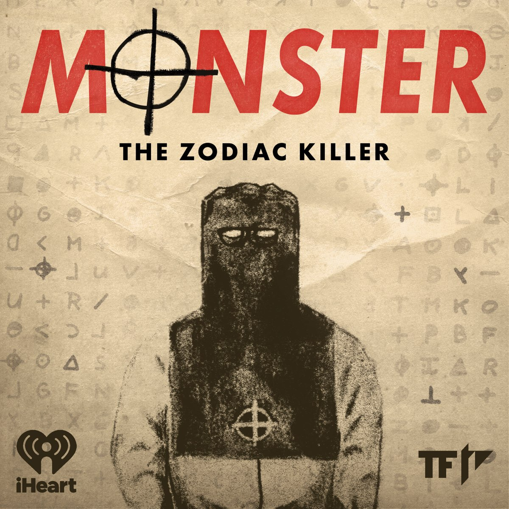

My first project is a video essay about the legacy of Ringo Starr, and his contribution to the Beatles. I argue that the Beatles would not have stayed afloat without Ringo. Give it a watch!
My second project is an audio narrative that dives deeper into the imfamous Zodiac Killer. By analyzing ciphers and pulling theories together, mysteries of the Zodiac are uncovered.
